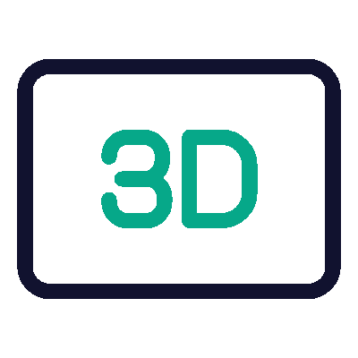
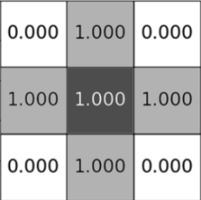
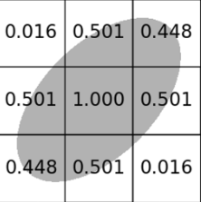
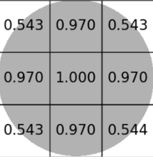
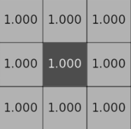

MatViz3D is a tool for modeling and visualizing material microstructures using cellular automata. This project was developed by the Department of Mathematical Modeling and Intelligent Computing at NTU "KhPI" and is available on GitHub.

Key Features
- Visualize microstructures in 3D format for detailed analysis.
- Zoom and rotate the material cube for closer inspection.
- Save images in various formats for documentation.
- View the histogram of generated grain volume distribution.
- Experience animations for microstructure generation.
- Choose an algorithm for analyzing material microstructure.
Target Audience
- Materials scientists and engineers — researchers studying material microstructures to improve their properties.
- Academics — professors, graduate students, and researchers at technical universities.
- Mechanical engineers — professionals analyzing material behavior under stress.
- Computer modeling specialists — for 3D visualization and analysis of complex structures.
Available algorithms
Von Neumann Cellular Automaton
The von Neumann cellular automaton, developed in the 1940s, is based on the concept of a self-replicating machine. Each cell has 6 neighbors, which share a side with it, and the future state of the cell depends on its own state and the state of its neighbors.

Probabilistic Ellipse Cellular Automaton
The Probabilistic Ellipse is a modification of the Probabilistic Cellular Automaton, differing only in the probabilities assigned to the neighbors of the grain (the starting cell).

Probabilistic Circle Cellular Automaton
The Probabilistic Cellular Automaton is a modification of the classical automaton with random or probabilistic elements. Like in the Moore automaton, each cell has 26 neighbors, but each neighbor is assigned a probability of being filled.

Moore Cellular Automaton
The Moore cellular automaton, developed by Edward Moore in 1962, is one of the most widely studied in the field of complex systems research. Each cell has 26 neighbors, which share a side or a corner with the grain. The future state of the cell depends on its own state and the state of its neighbors.
